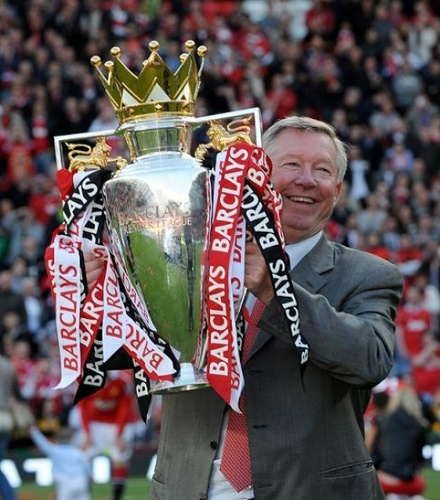

Didirikan: 1878, Newton Heath, Manchester, Britania Raya
Kantor pusat: Old Trafford, Stretford, Britania Raya
Manchester United Football Club adalah sebuah klub sepak bola profesional Inggris yang berbasis di Old Trafford, Manchester Raya, yang bermain di Liga Inggris. Didirikan sebagai Newton Heath LYR Football Club pada tahun 1878, klub ini berganti nama menjadi Manchester United pada 1902 dan pindah ke Old Trafford pada tahun 1910.
“ Jika saya menjalankan sebuah perusahaan, saya selalu ingin mendengarkanpemikiran anak-anak muda berbakat karena mereka adalah orang-orang yang paling berhubungan dengan kenyataan hari ini dan prospek untuk besok ”
